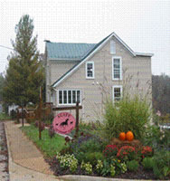

Welcome to Agape Veterinary Clinic, Inc.
Your Veterinarian in The Plains, VA
Call us at 540-253-5619
"Big City Technology, Small Town Charm"
Honest medicine is the cornerstone of our practice.Our personalized service and small town atmosphere make a visit to the veterinarian less stressful to your pets and educational for you. Please feel free to ask us any questions. The veterinarians at Agape have many hours in post-graduate training in surgery and medical diagnostics. We offer minimally invasive surgery options and we offer alternative treatments for arthritis and post surgical rehabilitation. Shockwave and acupuncture have proven to be excellent treatment modalities from dogs to horses. We also have preventative plans for breed specific problems.
We offer advanced surgery and diagnostics for a reasonable cost. We make every effort to treat you and your pet as family. We are interested in healing the whole animal and will look at all aspects of your pet's health.
Call us and make a consultation appointment for the best and most economical plan for your pet.
During surgical and medical procedures requiring sedation or anesthesia, we utilize the latest in anesthetic monitoring. We also use the latest techniques in pain management and make every effort to make your pets comfortable and reduce stress by gentle and loving care.
We offer equine medicine and surgery in the field by appointment. Dr Gray has a life time of knowledge and experience competing and working with horses across all disciplines. She specializes in pre-purchase exams and lameness work. We also provide reproductive and dental services.
We are a small clinic with a loving staff and we hope to always make your visits here with us pleasant.
Thank you for letting us serve you!
At Agape Veterinary Clinic, Inc., we treat your pets like the valued family members they are.
Owner Katherine Gray, DVM
The Plains Veterinarian | Agape Veterinary Clinic, Inc. | 540-253-5619
6323 Hopewell Road
The Plains, VA 20198